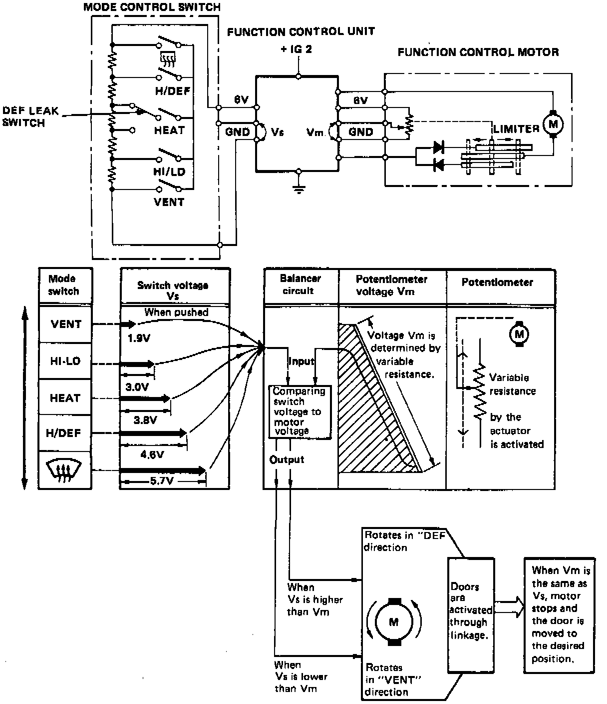

Air Door Actuator / Motor: Description and Operation

FUNCTION CONTROL SYSTEM
The direction and stopping point of the control motor are determined by the different input voltage (Vs) of each mode switch compared in the control unit to a second potentiometer voltage (Vm). If a particular switch voltage is higher than Vm, the control motor moves in the ("DEF") direction; if a voltage is lower than Vm, the motor moves in the opposite ("VENT") direction.
OPERATION
After comparing the voltage and signaling the motor to stop, the unit tries to balance the two voltages to the same voltage, which will signal the motor to stop. The time it takes to balance the two voltages determines the time the motor runs, which, in turn, determines what combination of air doors the motor opens or closes through linkage on the heater assembly housing.
If the motor runs to the full "VENT" or "DEF" position, a limiter shuts the motor off.